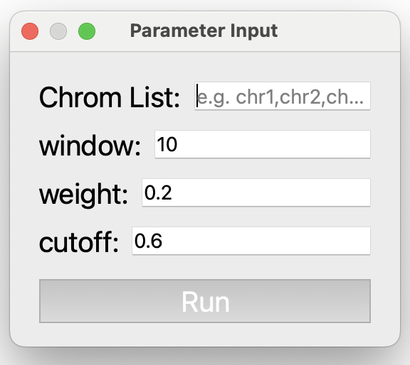

Breakpoint Filtering
The Breakpoint Filtering module identifies and filters breakpoints, providing the coordinates of simple rearrangement breakpoints.
{kind=link}
Description
The Breakpoint Filtering module offers two key functionalities:
Rearranged breakpoint identification with HiSV
Visualization of rearrangement events
Inputs
The input files for this module must include the following:
A tumor Hi-C sample in mcool or cool format.
Candidate Rearrangement Events:
If not using HiSV: Specify candidate rearrangement events with each breakpoint formatted as chr1:0-50000. These coordinates can be identical, representing a single base position (e.g., chr1:50000-50000).
If using HiSV: Wait for HiSV to finish running to obtain the breakpoints for each simple rearrangement event from the The result of HiSV box.
Guideline
Step 1: Load Tumor Sample
Click Tumor Sample, select a tumor Hi-C file, and click Load to import the file.
Step 2: Select Resolution
After loading the Hi-C file, use the Resolution dropdown to select the desired resolution.
Step 3 (Optional): Identify Simple Rearrangement Breakpoints with HiSV
Click Run HiSV to identify breakpoints for simple rearrangements. In the popup window, specify parameters such as chromosomes to analyze, window size, weight, and cutoff. Once completed, the results will appear in The result of HiSV box.
Parameter Descriptions (for detailed information, see HiSV documentation):

Chrom List: A list of chromosomes to analyze, specified as a comma-separated list, without any spaces (e.g., chr1,chr2,chr3).
window: The size of the sliding window used for analysis, specified as an integer (e.g., 10).
weight: A float representing the regularization parameter, specified as a float greater than 0 and less than 1. (e.g., 0.2).
cutoff: A threshold value for breakpoint selection, specified as a float greater than 0 and less than 1. (e.g., 0.6).
{kind=link}
Step 4: Enter Candidate Rearrangement Events
Enter the two breakpoints of candidate rearrangement events in the Position1 and Position2 fields.
Step 5: Visualize Rearrangement Event
Click Visualization to display the Hi-C map slice for the candidate rearrangement on the right side of the interface. Rearranged segments are highlighted: regions are outlined with a black box, and individual points are marked with a circle.
Step 6: Screen for False Positives or Refine Breakpoints
Observe abnormal interactions to screen for false positives. Alternatively, select peaks within abnormal interaction regions to refine breakpoints.
Step 7: Reset Visualization
Click Reset Visualization to analyze a new rearrangement event (repeat Step 4).
To reinitialize the module, click Reset.
{kind=link}